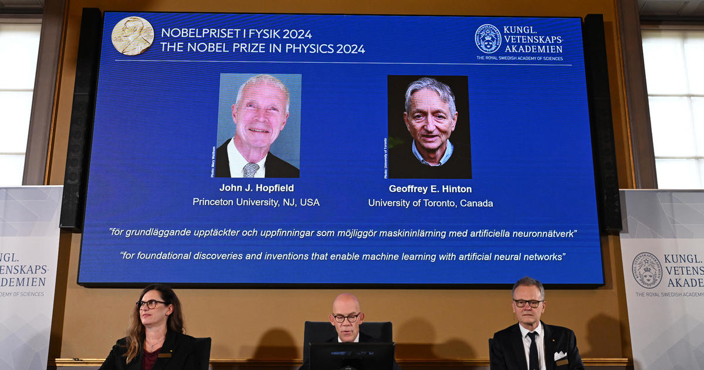

Scientists who built ‘foundation’ for AI awarded Nobel Prize
Oct 8, 2024, 9:19 PM
Two scientists credited with laying the “foundation of today’s powerful machine learning,” University of Toronto professor emeritus Geoffrey Hinton and Princeton University professor John Hopfield, were awarded the Nobel Prize in physics today.
Their discoveries and inventions laid the groundwork for many of the recent breakthroughs in artificial intelligence, the Nobel committee at the Royal Swedish Academy of Sciences said. Since the 1980s, their work has enabled the creation of artificial neural networks, computer architecture loosely modeled after the structure of the brain.
Source: www.theverge.com
For more information, check out this link.